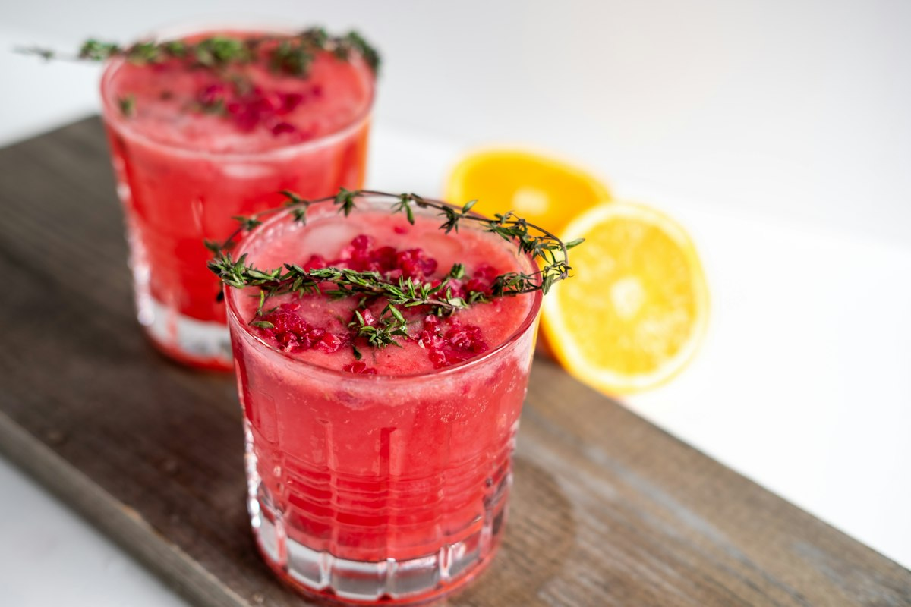
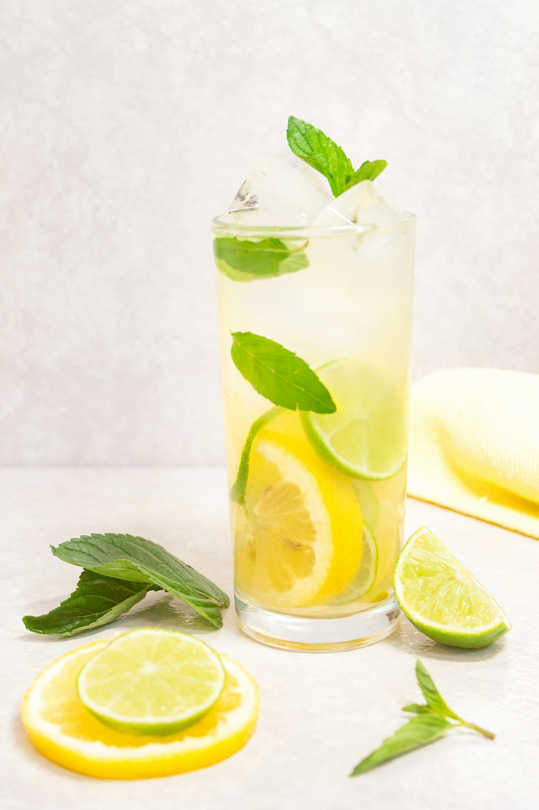

Cherry candy without the sugar crash
I expected another bland fiber soda. Cherry Pop is bright and a little tart, and there is no sweet film left behind. A case lasted us two days.
MayaVerified buyer
Based on 312 reviews
I expected another bland fiber soda. Cherry Pop is bright and a little tart, and there is no sweet film left behind. A case lasted us two days.
Crisp citrus, lively bubbles, and my stomach stays calm afterward. I swapped my afternoon cola for this and have not gone back.
Plenty of ripe mango flavor. I would love a touch more fizz, but it is the first flavor my kids asked me to restock.
Sharp lime up front, berries after. We bring a case to every cookout now and someone always asks what it is.

Cool mint, a little lime, zero weird aftertaste. Over ice it feels like a mocktail.
Tastes like the grape soda I remember, only lighter. The fiber is a bonus and the can art is fun.
Tastes like a lemon-lime soda should. Bubbly, tangy, and it does not sit heavy.
Creamy vanilla notes and a gentle spice. I poured it over ice cream and it worked.

Light, fruity and not syrupy. Would be a 5 if the 12 pack lasted longer in my house.
The grape flavor is pleasant but a bit mild for me. Bubbles are great though, and I like the fiber.
Juicy mango with a little tang at the end. Our whole office fridge is stocked with it now.
Too gingery for my taste and the carbonation felt soft. Friends liked it, so maybe it is just me.
Bright and sunny, with real juice flavor and none of that syrupy weight. I keep a case in the garage.
Lime wins over the strawberry for me, which I love. Great with spicy tacos.
The mint is strong at first. By the third can I was a fan. Starts bold, finishes clean.
Two cans in my box were dented and one had leaked. The flavor I tried was fine, but the packaging let me down.
Kid approved, grown-up approved. Ordered three more boxes already and set up a subscription.

Great on a hot afternoon. I add a lime wedge and it tastes like a bar drink.
No reviews match these filters.